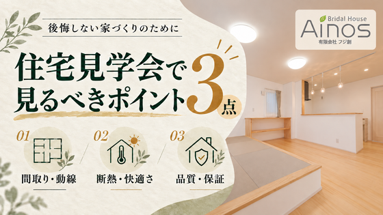

住宅見学会で見るべきポイント3点！後悔しない家づくりのために
「住宅見学会に行ってみたいけれど、どこを見ればいいのかわからない」 「おしゃれな家を見るだけで終わってしまいそう......」 そんな方も多いのではないでしょうか。 マイホームは、人生の中でも大きな買い物です。 完成した
続きを読む →FUJISOU AINOS JOURNAL
家づくりのこと、暮らしのこと。
日々の想いを、お伝えします。
新しい記事から 1・40ページ

「住宅見学会に行ってみたいけれど、どこを見ればいいのかわからない」 「おしゃれな家を見るだけで終わってしまいそう......」 そんな方も多いのではないでしょうか。 マイホームは、人生の中でも大きな買い物です。 完成した
続きを読む →
「ローコスト住宅」という言葉を、最近よく耳にするようになりました。 住宅価格が高くなっている今、 「できるだけ安く家を建てたい」 「住宅ローンの負担を少なくしたい」 「でも、安いだけの家は不安......」 このように考
続きを読む →
「家を建てたいけれど、もう少し待ったほうがいいかな？」 「住宅価格が下がるまで待とう」 「もう少し頭金を貯めてから......」 家づくりを考えている方から、こうした声を聞くことがあります。 もちろん、人生で大きな買い物
続きを読む →

「親から実家を相続したけれど、誰も住む人がいない」 ...
続きを読む →
「住宅ローンは借金だから、できるだけ少なくしたほうがいい」 ...
続きを読む →
「住宅ローンは借金だから、できるだけ借りないほうがいい」 そう考えている方は多いのではないでしょうか。 確かに、住宅ロ...
続きを読む →
「最近は平屋が人気ですよね」 ...
続きを読む →
暮らしを豊かにする住まいのアイデア 「自宅にいながら、まるでホテルにいるような気分を味わいたい」 そんな住まいへの憧れ...
続きを読む →
「家を建てたいけれど、どの住宅会社にすればいいのかわからない」 ...
続きを読む →
注文住宅を検討していると、複数の住宅会社から見積もりを取る機会があります。 その際、「同じ30坪くらいの家なのに500...
続きを読む →
マイホームを建てる際、多くの人が最初に直面するのが「土地探し」です。 「できるだけ安く土地を購入したい」 「予算内で理想...
続きを読む →
「家ではスリッパを履くのが当たり前」と思っていませんか？ 実は近年、足本来の機能を活かすために、家の中ではあえてスリッ...
続きを読む →
「マイホームが欲しいけれど、新築は価格が高くて手が届かない...」 そんな悩みを抱える方が増えています。 建築資材や人...
続きを読む →
「家を建てたいけれど、まだ土地が決まっていない...」 そんな方は意外と多く、実際に家づくり...
続きを読む →
「子供には、自立した立派な大人になってほしい。」 これは多くの親が願うことではないで...
続きを読む →
家づくりを検討している子育て世代の方なら、一度は考えたことがあるの...
続きを読む →
最近、テレビで「高齢者が賃貸住宅を借りにくい問題」が取り上げられていました。 日本は人生100年時代に...
続きを読む →
趣味を思い切り楽しめる住まいが人気です。 近年、「自宅で趣味を楽しみたい」と...
続きを読む →
家は「建てた後」が本当に大切です。 瑕疵保証20年＋最長60年更新に加え、設備10年延長保証を全棟標準化しました。 マ...
続きを読む →
Instagramを見る YouTubeを見る 資料請求をする 展示場を回る 住宅会社を比較する 今はスマートフォン1...
続きを読む →
マイホームを考え始めたとき、多くの方が最初に悩むのが ...
続きを読む →
家を持ちたいと思った"その時"が、家づくりのベストタイミングです 「もう少し様子を見ようかな...」 「住宅...
続きを読む →
「いい土地が見つからない」 「土地は自分で探したほうがいいの？」 家づくりを考え始めた多くの方が、最初にぶつかるのが "土地選びの壁" です。 しかし実は、土地探しはやり方次第で成功率が大きく変わります。 この記事では
続きを読む →